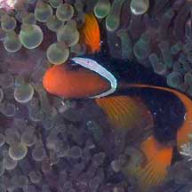
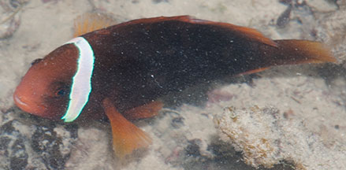
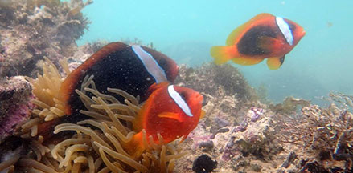
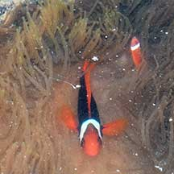
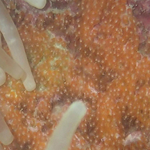

|
|
| fishes text index | photo index |
| Phylum Chordata > Subphylum Vertebrata > fishes > Family Pomacentridae > Genus Amphiprion |
| Tomato
anemonefish Amphiprion frenatus Family Pomacentridae updated Sep 2020
Where seen? This beautiful anemonefish with a white 'head band' lives mainly in the Bubble tip sea anemone which is not very commonly encountered, usually on good reefs on our Southern shores. There is a report of it being found in a Magnificent anemone too. Features: 5-14cm. Body red to black with one black-edged white bar just behind the eyes. There may be a second black-edged white bar in the middle of the body. Juveniles are usually red and may have 2-3 narrow white bars. |
 Kusu Island, Aug 04 |
 Terumbu Bemban, Jun 10 |
| Amazing gender switch: Anemonefishes can change their gender. Often, a sea anemone will be home to several anemonefishes of the same species. Usually the largest anemonefish in the group is the female and the next largest is the functioning male (although he is often less than half her size). Besides being larger, females have blackish sides while males are a lot smaller and lack the blackish colour being mostly red overall. If the female is removed from the group, the male becomes a female and the next largest becomes the dominant male. In this way, anemonefishes can continue to breed throughout the year. Small anemonefishes are not necessarily younger, just lower in the "pecking order". It is believed they remain small because of the constant harassment by the dominant pair. Small anemonefishes are thus NOT the babies of larger anemonefishes in the same anemone. |
 Females larger and more blackish, males smaller and usually all red. Terumbu Semakau, May 18 Photo shared by Loh Kok Sheng on facebook |
Pulau Semakau, Apr 17
|
| What does it eat? It feeds on
plankton (mostly copepods) and also munches on bottom-dwelling algae. Human uses: Unfortunately, these fishes are taken in large numbers from the wild for the aquarium trade. The harvest may involve the use of cyanide or blasting, which damage the habitat and kill many other creatures. Like other fish and creatures harvested from the wild, most die before they can reach the retailers. Without professional care, most die soon after they are sold. Often of starvation as owners are unable to provide the small creatures and plants that these fishes need to survive. In artificial conditions, many succumb to diseases and poor health. Those that do survive are unlikely to breed. There have been some success in breeding anemonefish for the aquarium trade. Although captive bred anemonefish are hardier, they are more expensive. Harvesting from the wild will probably continue so long as there are unscrupulous traders and aquarists. Thus, anemonefishes continue to be unsustainably harvested from the wild. The pressure on wild populations has risen tremendously due to the huge demand following the popular "Finding Nemo" cartoon. Status and threats: The Tomato anemonefish is listed as 'Vulnerable' on the Red List of threatened animals of Singapore. Like other creatures of the intertidal zone, they are affected by human activities such as reclamation and pollution. Over-collection can also have an impact on local populations. According to the Singapore Red Data Book, "habitat protection and strict policing against illegal collection are required" to conserve our anemonefishes. |
| Tomato anemonefishes on Singapore shores |
On wildsingapore
flickr
|
| Other sightings on Singapore shores |
 Tanah Merah Ferry Terminal, Jun 22 Photo shared by Loh Kok Sheng on facebook. |


 Eggs laid near the host sea anemone. |


Links
References
|